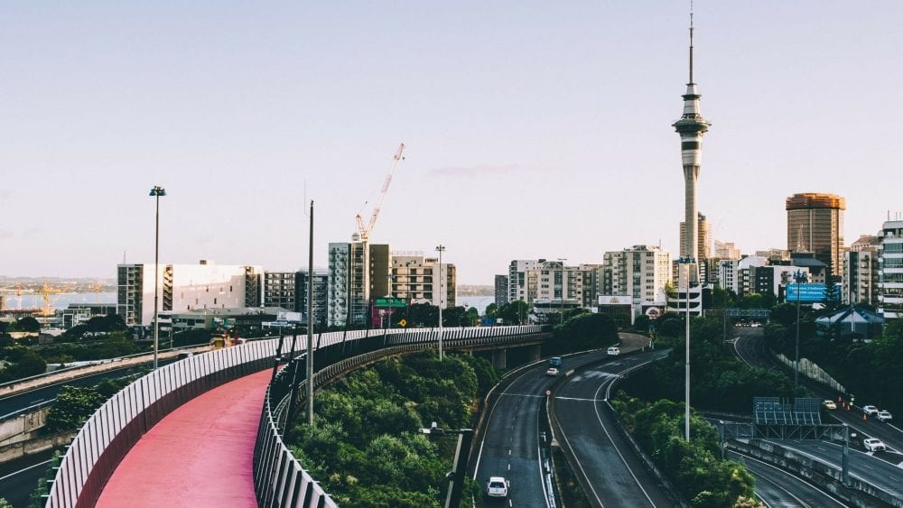
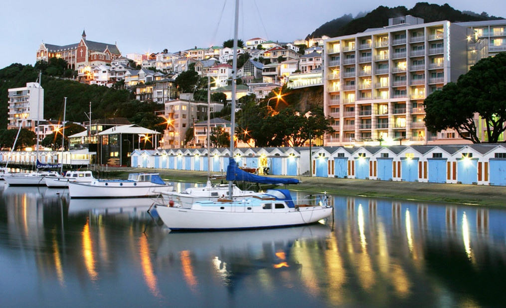
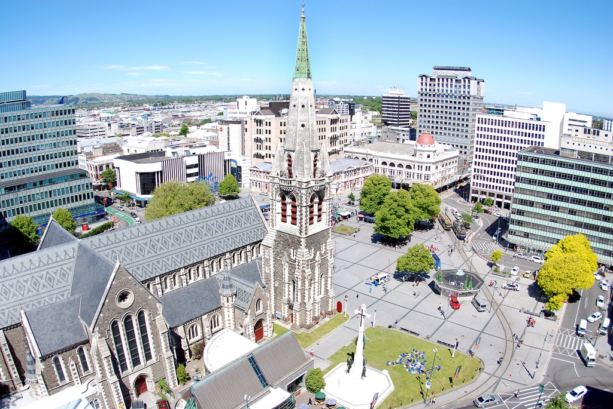
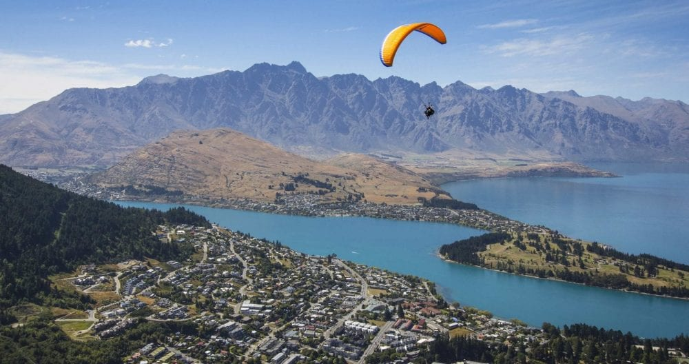
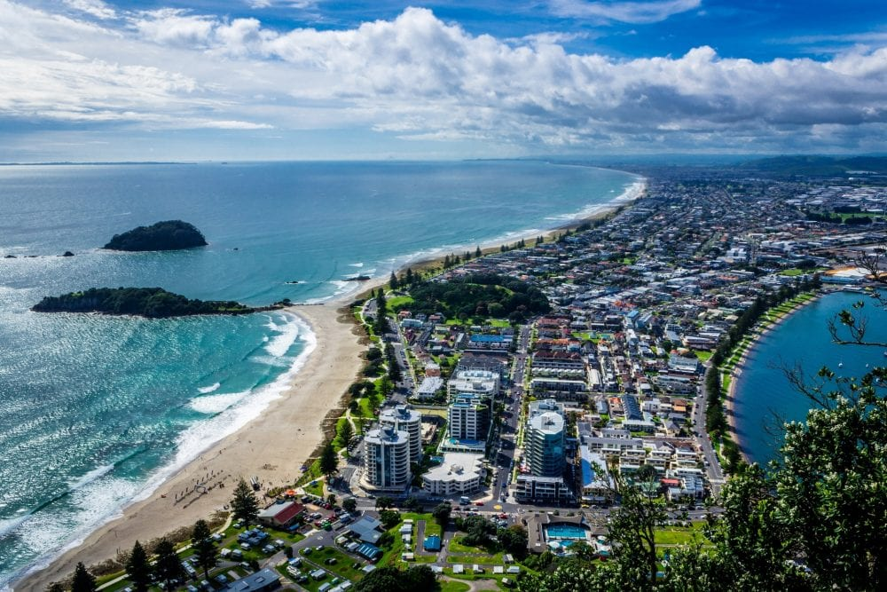
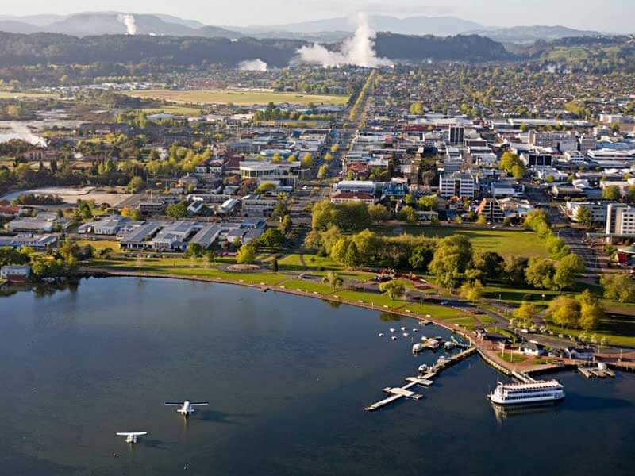
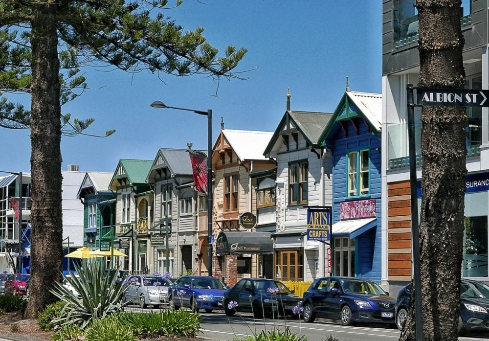

7 Amazing Cities in New Zealand
Auckland

Auckland, known as the "City of Sails," is the largest and most populous urban area in New Zealand. It's famous for its beautiful harbors, diverse culture, and vibrant nightlife.
Wellington

Wellington, the capital city of New Zealand, is known for its artsy vibe, bustling waterfront, and dynamic cultural scene. It's also home to the national museum, Te Papa.
Christchurch

Christchurch, the largest city in the South Island, is known for its English heritage, beautiful gardens, and post-earthquake resilience and rebuilding efforts.
Queenstown

Queenstown is a resort town known for its stunning natural scenery, adventure sports, and vibrant nightlife. It's a popular destination for skiing, bungee jumping, and exploring the nearby Fiordland National Park.
Tauranga

Tauranga, located in the Bay of Plenty, is known for its beautiful beaches, warm climate, and bustling harbor. It's a great place for water activities, such as swimming, surfing, and sailing.
Rotorua

Rotorua is famous for its geothermal activity, Maori culture, and adventure tourism. Visitors can enjoy hot springs, geysers, and learn about the rich Maori heritage.
Napier

Napier is known for its well-preserved Art Deco architecture, vibrant wine region, and beautiful coastal scenery. The city offers a mix of cultural experiences and outdoor activities.